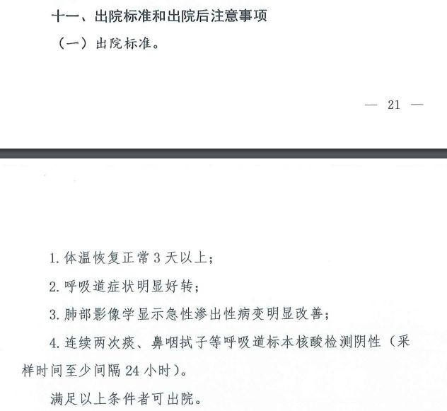

新冠患者“复发”有三种情况？武汉医生建议分类施策
原文链接 备份链接 【财新网】（实习记者 张阳 记者 黄姝伦）多起复阳病例频现，为疫情防控带来新压力。武汉一线医生发文称，大量病愈患者出院，部分患者出院后出现再次发热、核酸检测阳性的现象，原因多种，既与患者基础带病相关，也有临床治疗、核酸 …

武汉大学中南医院医学影像科副主任张笑春表示，要注意防控，但也不需要太恐慌，更不要歧视康复出院的病人，“我们有的是办法应对。”
全文4201字，阅读约需8分钟
新冠肺炎疫情暴发以来，一些出院患者复查时，病毒核酸检测结果又变为阳性，简称“复阳”。“复阳”病例的成因、“复阳”病例是否传染等问题，引发公众高度关注。
2月28日，国务院联防联控机制召开的新闻发布会上，国家卫生健康委医政医管局监察专员郭燕红表示，暂未发现“复阳”病例传染别人的现象。国家卫健委高级别专家组组长、中国工程院院士钟南山此前表示“复阳”患者是否再传染别人，仍有待观察。
3月5日，武汉大学中南医院医学影像科副主任张笑春告诉新京报记者，各地增加的“复阳”现象，反映出目前新冠肺炎检测技术精度和效率的两难，也反映出医学界对于新冠肺炎病毒仍在加深认识的过程中，“这个过程注定不会容易”。
张笑春建议，条件成熟时可以采用多点核酸检测、多种检测方案互补的办法，从出院环节和隔离期间着手，遏止“复阳”病例的增加。
━━━━━
“复阳”可追溯至2月14日
最早可查的“复阳”案例可追溯到2月14日，加拿大安大略省的夫妻二人在出院14天后双双“复阳”。他们分别于1月29日及1月31日出院，临床诊断为已经痊愈。但出院14天后，两名病例的鼻咽拭子检测结果均为阳性。
据各地公开通报，2020年2月中下旬至今，国内有广东、江苏、天津、四川、湖南、湖北等6个省份的疾控部门公布过“复阳”病例通报内容。此外，加拿大、韩国亦发现“复阳”病例。
2月25日，广东省疾控中心副主任宋铁称，广东省内出院患者出现“复阳”现象的比例约14%。广州市第八人民医院感染病中心ICU主任李粤平称，他们在对出院病例随访时发现了13例“复阳”患者。
2月28日，新京报记者从江苏省徐州市疾控中心获悉，27日，该市有1例出院病例核酸复检阳性（无症状）。在复检阳性3天前，该病例刚解除隔离归家。
3月1日，海南省政府官网消息，海南首例“复阳”患者再次出院。目前其体温已恢复正常5天，咽拭子、粪便核酸连续2次（间隔超24小时）检测均为阴性。
2月27日，武汉大学中南医院研究人员发布在国际顶级医学期刊《美国医学会杂志》上的一篇论文，从研究角度揭开“复阳”现象的一角。论文以4例新冠病毒康复者为观察样本，这4名康复者在出院5至13天后，核酸检测呈阳性。4人皆为医护人员，疾病的严重程度为轻度至中度，年龄范围为30至36岁。
论文显示，其中一名患者出院前接受过两次核酸检测，结果皆呈阴性，CT也显示其肺部病灶明显吸收好转，因此被安排出院。该患者出院后接受严格的居家隔离，并持续服用奥斯他韦类药物近一个月。2月初，该患者准备复工前再次接受检查，CT结果显示正常，但首日核酸检测结果呈弱阳性，次日复查结果呈阳性。
研究人员在论文结论中称，可能需要重新评估当前的出院标准、解除隔离标准及患者管理问题。
3月5日，论文作者之一的武汉大学中南医院医学影像科教授徐海波告诉新京报记者，对于应如何调整出院标准应对“复阳”，目前还没有找到更有效的方法和标准。
“我们还在研究中，还没有新的结果，有结果会及时公布。目前按照国家卫健委公布的方案执行是最好的。”徐海波称。
━━━━━
需排除“假阴性”因素
在国家卫健委发布的《新型冠状病毒肺炎防控方案（第六版）》中，新冠肺炎传染源主要是新型冠状病毒感染的患者，无症状感染者也可能成为传染源。而《新型冠状病毒肺炎防控方案（第五版）》则显示，新冠病毒感染者除临床症状消失外，还必须连续两次唿吸道病原核酸检测阴性(采样间隔至少1天)，才可以判定治愈出院；此外，核酸检测结果阴性不能排除新型冠状病毒感染，需要排除可能产生假阴性的因素。
“假阴性”，成为患者在出院或解除隔离前扰乱诊断的重要因素。《新型冠状病毒肺炎防控方案（第五版）》附录的新冠肺炎实验室检测技术指南，对标本采集的种类、方法、包装和保存等都有严格要求，任何一个环节出现问题都可能导致“假阴性”。
张笑春向新京报记者介绍，目前常用的两种核酸检测方式为肛拭子、咽拭子核酸检测，采用原因是它们高效且方便操作，适合有当前有大量核酸检测需求的状况。但是，这两种方式取样局限性较大：“病毒可能不在咽部和肛门，在其他的身体组织中。加上出院患者体内的病毒量较少，操作上也可能没能取到，实际采到的样本中更少。还有试剂盒敏感度、患者身体差异等干扰因素，因此容易显现出‘假阴性’。”
“这就是精度和效率的矛盾。”张笑春认为，“全国待查人数太多，要做大范围排查，实在很难兼顾。”
2月18日，中国工程院院士钟南山也在新闻发布会上表示，用核酸检测确诊是正确的，但还要看取材，如果采样不准确，会造成很大的结果差异。
据国家卫健委检验中心信息，在咽拭子在口腔和鼻腔取样中，由于新冠病毒主要是在肺的深部，离大气管较远，感染者又较多干咳、痰液不多，所以上唿吸道病毒含量相对较低，增加了“假阴性”的出现概率。
在张笑春看来，核酸检测只能给出感染定性参考，而CT影像检测直观反映肺部情况，一定程度上能够和核酸检测互为补充。张笑春称，在条件逐渐成熟时，“两管齐下”甚至“多管齐下”，用多种方式做出院前的检测，相信能有效减少后续“复阳”病例的增加。

▲第七版诊疗方案中的出院标准。 国家卫健委官网截图
━━━━━
有患者入院后排除了重新感染病毒的可能
郭燕红在2月28日的国务院联防联控机制召开的新闻发布会上表示，新冠肺炎病毒是一个新病毒，它的致病机理、疾病的全貌和病程的特点还需要进一步加深认识。
张笑春告诉新京报记者，从目前的临床经验看，新冠肺炎病毒可侵略人体多个器官，因此病毒可能存在于患者的血液、粪便、胸腔积液及脑嵴液等地方，这就为多点检测方式指了路。张笑春认为，除了常规的咽拭子、肛拭子检测外，应结合患者临床症状决定核酸检测点，这样有利于防止取样不准、样本量不够、取样部位病毒含量不能反映整体等问题。不过和多种方式检测一样，大范围实行多点核酸检测，每次所需的检测时间会更多。
受制于检测需求对新冠病毒本身的研究进度，目前各地对“复阳”现象采取的措施较为有限。各地疾控部门的公开资料显示，各地仍以加强出院患者随访、加强健康状况监测等后发式的干预手段为主。
对于海南的“复阳”病例再次出院的经验，海南省人民医院疾控办负责人、感染科副主任吴彪介绍，“复阳”患者再次住院后检查发现患者体内已产生IgG抗体，同时IgM已阴转，排除了重新感染病毒的可能。海南省人民医院在符合国家卫健委出院标准的患者出院前，会对其进行全血、粪便的核酸检测，确定全阴性后方可出院。
医院将加强对出院新冠肺炎患者跟踪随访，按属地疾病控制中心指定场所统一实施为期14天免费的康复隔离和医学观察。
从患者出院当日起至出院后12周，为出院患者设立第4周、第8周、第12周三个返院复查节点。重点复查血常规、血生化、指脉氧、新冠病毒抗体、多部位核酸、胸部CT等项目，开展健康指导和健康状况监测，实现全流程管理。
2月22日上午，广州市第八人民医院党委副书记、主任医师张复春则在发布会上建议，出院病人依然要做好居家隔离，在家进行分餐制。据其称，有病人出院两周后又出现阳性，目前对病期以及带毒时间还不清楚，为此要求所有患者两周、四周后回医院随访。
除了严格随访机制，武汉大学中南医院医学影像科副主任张笑春认为，可以考虑延长出院患者的社区隔离及居家隔离时间。”康复者在解除医院隔离后，还需要在社区的隔离点隔离14天再归家，这期间能得到简单的医疗服务。这个时间或许可以考虑延长到2个月，甚至3个月，拉长观察的时间窗。“张笑春建议。
3月4日，国家卫健委公布的第七版诊疗方案中，出院后注意事项也有所修改。考虑到有少数出院患者出现核酸检测复检阳性的问题，为加强对出院患者的健康管理和隔离，将“应继续进行14天自我健康状况监测”改为“应继续进行14天的隔离管理和健康状况监测”。这意味着出院患者出院后，仍需接受医护人员进行健康状况监测，与此前的自我检测相比严格程度有所提升。
━━━━━
“复阳”患者是否传染暂无定论
由于“复阳”病例多在解除隔离后的复检中发现，因此可以自由活动的“复阳”病例是否有传染性，成为“复阳”当下最受关注的要点。
▲国家卫健委医政医管局监察专员郭燕红介绍“复阳”情况。央视新闻截图
当下“复阳”病例的传染性认识，与目前全球医学界对新冠病毒的认识一样，依然处于探索中。
加拿大安大略省卫生厅医学微生物学负责人凡尼莎·艾伦（Vanessa Allen）在新闻发布会上称，在“复阳”病例的检测样本中发现了一些遗传物质或病毒物质残留，但目前还不能从这些残留物质中确定病毒的存活状态，也暂不明确“复阳”患者是否仍有传染性。
2月27日，钟南山表示，新冠肺炎是新发传染病，还不知道它的传播过程，目前不能下绝对的定论。但是根据微生物的规律，一般只要患者身体里产生了足够抗体，这病人就不会再感染了。但这样的患者会不会再传染给别人，仍有待观察。
在徐海波看来，康复出院病例的核酸检测呈阳性，可能说明部分康复者体内仍携带有病毒，但是否有传染性仍未清楚。
张笑春则认为，“复阳”可能源于病例出院接受检测时体内病毒量较低，未达到核酸检测阳性的程度，因此未能被检测出来；出院后，其体内病毒有所繁殖，病毒含量增高到能被检测出阳性。这说明病人在隔离期后，体内的病毒仍有一定活性，因此防范“复阳”病例传染性非常有必要。
海南省人民医院疾控办负责人、感染科副主任吴彪认为，达到国家出院标准后出院的患者，理论上机体处于康复过程，机体存量病毒处于清除过程。如果出现恢复期核酸检测呈阳性，只要通过临床综合判断不是疾病复发，它也不会构成很大的威胁，成为新的传染源的可能性也是非常小的。
2月25日，广州市第八人民医院感染病中心ICU主任李粤平也在广东省疫情发布会上介绍，虽然“复阳”病例的核酸检测呈阳性，但从技术上很难区分是活病毒还是死病毒。所以对于病毒的防控，仍需严防死守。
“对‘复阳’的现象，医院和个人是要注意防控，但也不需要太恐慌，更不要歧视康复出院的病人。”张笑春称，“我们有的是办法应对，只是在各个层面需要做好权衡，改善的空间很大。”
新京报记者 刘浩南 编辑 郭琛 校对 翟永军
点击下图进入”全国新型冠状病毒感染肺炎实时地图“

*值班编辑 一碗鱼*


本文未经新京报书面授权不得转载使用
欢迎朋友圈分享

原文链接 备份链接 【财新网】（实习记者 张阳 记者 黄姝伦）多起复阳病例频现，为疫情防控带来新压力。武汉一线医生发文称，大量病愈患者出院，部分患者出院后出现再次发热、核酸检测阳性的现象，原因多种，既与患者基础带病相关，也有临床治疗、核酸 …
原文链接 备份链接 *************▲*************2020年2月13日，在湖北省新型冠状病毒核酸检测的服务机构，检测人员对采集来的样本进行标本信息核对。（新华社/图） 全文共4874字，阅读大约需要10分钟。 核 …
原文链接 备份链接 澎湃新闻记者 朱远祥 3月4日，国家卫健委官网公布《新型冠状病毒肺炎诊疗方案（试行第七版）》，将此前要求出院患者进行14天“自我健康状况监测”，改为14天的“隔离管理和健康状况监测”。 国家卫健委在对新版诊疗方案进行解 …
原文链接 备份链接 出院并不等于彻底痊愈 2月27日，已经出院19天的徐州居民王先生核酸检测呈阳性，被再次收入定点医院医学观察。 王先生在2月9日出院，经过14天隔离点观察后回家。回家后三天，王先生在新闻上看到部分康复者复检呈阳性，主 …
原文链接 备份链接 【财新网】（实习记者 何京蔚 记者 黄蕙昭）北京时间2月14日，加拿大安大略省卫生厅召开新闻发布会，通报当地新型冠状病毒肺炎疫情。发言人芭芭拉·亚菲(Babara Yaffe)表示，多伦多市确诊的两例新冠肺炎患者，临 …